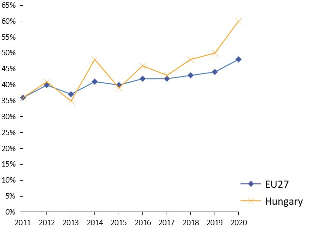
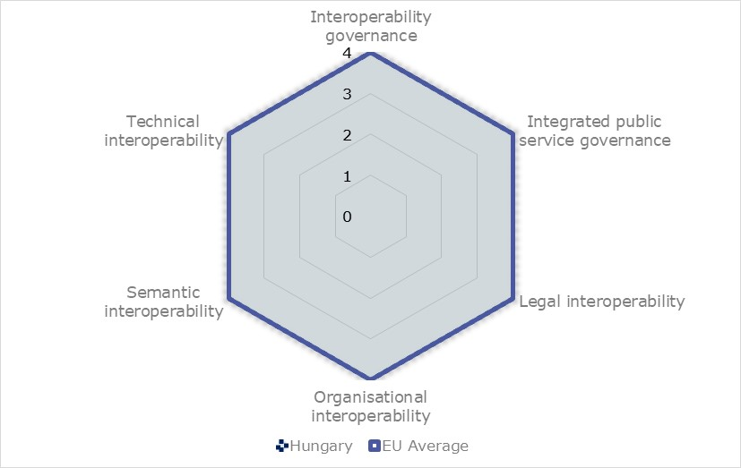
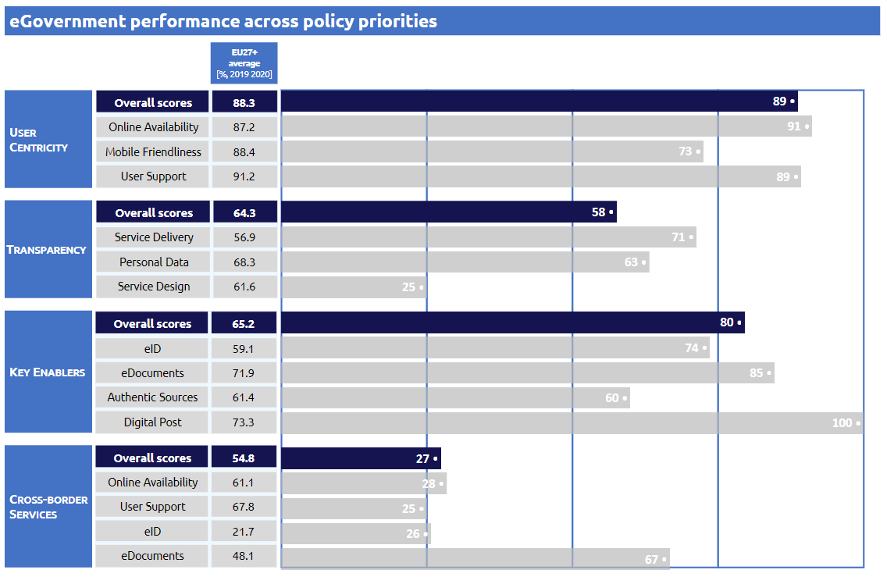

Percentage of individuals using the Internet for interacting with public authorities in Hungary
Percentage of individuals using the Internet for obtaining information from public authorities in Hungary


Digital Public Administration factsheet 2021
Hungary

ISA2
2 Digital Public Administration Highlights 11
3 Digital Public Administration Political Communications 13
4 Digital Public Administration Legislation 19
5 Digital Public Administration Governance 25
6 Digital Public Administration Infrastructure 32
7 Cross-border Digital Public Administration Services 40
Please note that the data collection exercise for the update of the 2021 edition of the Digital Public Administration factsheets took place between March and June 2021. Therefore, the information contained in this document reflects this specific timeframe.

Country
Profile
1
Population: 9 750 149 (2020)
GDP at market prices: 135 924.5 (2020)
GDP per inhabitant in PPS (Purchasing Power Standard EU 27=100): 74 (2020)
GDP growth rate: -5 (2020)
Inflation rate: 3.4 (2020)
Unemployment rate: 4.3 (2020)
General government gross debt (Percentage of GDP): 80.4 (2020)
General government deficit/surplus (Percentage of GDP): -8.1 (2020)
Area: 93 000 km²
Capital city: Budapest
Official EU language: Hungarian
Currency: Hungarian Forint HUF
Source: Eurostat (last update: 26 June 2020)
The following graphs present data for the latest Generic Information Society Indicators for Hungary compared to the EU average. Statistical indicators in this section reflect those of Eurostat at the time the Edition is being prepared.
Percentage of individuals using the Internet for interacting with public authorities in Hungary | Percentage of individuals using the Internet for obtaining information from public authorities in Hungary |
|  |
Percentage of individuals using the Internet for downloading official forms from public authorities in Hungary | Percentage of individuals using the Internet for sending filled forms to public authorities in Hungary |
 | |
In 2017, the European Commission published the European Interoperability Framework (EIF) to give specific guidance on how to set up interoperable digital public services through a set of 47 recommendations. The picture below represents the three pillars of the EIF around which the EIF Monitoring Mechanism was built to evaluate the level of implementation of the EIF within the Member States. It is based on a set of 68 Key Performance Indicators (KPIs) clustered within the three main pillars of the EIF (Principles, Layers and Conceptual model), outlined below.

Source: European Interoperability Framework Monitoring Mechanism 2020
For each of the three pillars, a different scoreboard was created to breakdown the results into their main thematic areas (i.e. the 12 principles of interoperability, the interoperability layers and the components of the conceptual model). The thematic areas are evaluated on a scale from one to four, where one means a lower level of implementation and 4 means a higher level of implementation. The graphs below show the result of the second EIF Monitoring Mechanism data collection exercise for Hungary in 2020.

Source: European Interoperability Framework Monitoring Mechanism 2020
Hungary’s results in Scoreboard 1 show an overall good implementation of the EIF Principles, with all principles falling within the EU average. Areas of improvements are concentrated in the Principles 1 (Subsidiarity and Proportionality), 7 (Inclusion and accessibility), 9 (Multilingualism) and 12 (Assessment of Effectiveness and Efficiency) for which the score of 3 shows an upper-medium performance in the implementation of corresponding recommendations. Indeed, the alignment and tailoring of national interoperability frameworks and interoperability strategies with the EIF (Principle 1 – Recommendation 1), the use of e-accessibility specifications to ensure all public services are accessible to all citizens, including persons with disabilities, the elderly and other disadvantaged groups (Principle 7 – Recommendation 14), the availability of information systems and technical architectures that cater for multilingualism (Principle 9 – Recommendation 16) and the implementation of evaluation mechanisms to assess the effectiveness and efficiency of interoperable solutions (Principle 12 – Recommendation 19) are partial and could be bettered to reach the maximum score of 4.
Source: European Interoperability Framework Monitoring Mechanism 2020
The Hungarian results for the implementation of interoperability layers assessed for Scoreboard 2 show an overall high performance with a score of 4. Nonetheless, the assessment and selection of standards and specifications with a structured, transparent, objective and common approach in Recommendation 22 and the consultation of relevant catalogues for standards, specifications and guidelines at the national and EU level in Recommendation 23 are two areas to improve in the overall organisational interoperability result for Hungary.

Source: European Interoperability Framework Monitoring Mechanism 2020
Hungary’s scores assessing the Conceptual Model in Scoreboard 3 show a good performance in the implementation of recommendations associated with the conceptual model, internal information sources and services, base registries and open data. However, some improvements can be made in implementing recommendations related to the catalogues and external information sources and services. In particular, putting in place catalogues of public services, public data, and interoperability solutions (Catalogues - Recommendation 44) and the lack of use of external information sources and services while developing European public services (External information and services – Recommendation 45) hinders the overall Hungarian score on the conceptual model.
Additional information on Hungary’s results on the EIF Monitoring Mechanism is available online through interactive dashboards.
The graph below presents the main highlights of the latest eGovernment Benchmark Report, an assessment of eGovernment services in 36 countries: the 27 European Union Member States, as well as Iceland, Norway, Montenegro, the Republic of Serbia, Switzerland, Turkey, the United Kingdom, Albania and Macedonia (referred to as the EU27+).
The study evaluates online public services on four dimensions:
The 2021 report presents the biennial results, achieved over the past two years of measurement of all eight life events used to measure the above-mentioned key dimensions. More specifically, these life events are divided between six ‘Citizen life events’ (Career, Studying, Family life, measured in 2020, and Starting a small claim procedure, Moving, Owning a car, all measured in 2019) and two ‘Business life events’ (Business start-up, measured in 2020, and Regular business operations, measured in 2019).
Source: eGovernment Benchmark Report 2020 Country Factsheets

Digital Public Administration Highlights
2
Digital Public Administration Political Communications
By 2018, the majority of public administration bodies providing digital public services had implemented at least the minimum level of provision of eGovernment services, in accordance with the eAdministration Act. Throughout 2019 and 2020, the growing tendencies continued, as several developments have taken place leading to more and more modern, user-friendly electronic services.
Indeed, the break-out of the COVID-19 pandemic in March 2020 also proved that digitalisation can effectively ensure the functioning of the administration and public services in such radically changed conditions, thus reducing the economic downturn caused by the pandemic. The eGovernment services provided access for citizens to the most important administrative affairs and the digital public services have played a key role in maintaining public trust in the state during the crisis.
According to the data available from domestic surveys, and the latest data of the Eurostat Information Society Indicators, the number of the users interacting digitally with the public administration have increased by 7 to 10 percentage points, and the goal is to continue with this trend, by further developing user-centric services in the upcoming years.
The new National Digitalisation Strategy 2021-2030 to be published this year will also promote these goals, by creating a data-driven and future-proof Hungarian digital public administration.
Digital Public Administration Governance
Seamless and operationally secure IT background systems are of strategic importance for the government and the public administration. This need is best met by the state-owned, secure, well-regulated, service-oriented, high-performance central IT environment, the Government Data Centre. It provides the single basic infrastructure necessary for the efficient operation of the state IT systems. The Government Data Centre is a geo-redundant central IT infrastructure capable of providing cloud-based services and an IT infrastructure environment for government, public administration and public services use.
Digital Public Administration Infrastructure
Compared to the last reported year, an additional 51 organisations have been connected to the KKSZB Central Government Service Bus interoperability platform. Altogether, 156 organisations are using the platform to provide data exchange services, meaning 171 services related to base registries are already available. The number of data exchanges has increased from 42.7 million per month to more than 100 million per month in the last year.
Regarding the Municipality ASP system, the most important development of the year has been the introduction of ePayment services via the eAdministration single point of contact portal of the Municipality ASP for all 3197 connected municipalities in March 2020.

Digital Public Administration Political Communications
3
Berlin Declaration on Digital Society and Value-Based Digital Government
In December 2020, the Hungarian government signed the Berlin Declaration on Digital Society and Value-Based Digital Government, thus re-affirming its commitment – together with other EU Member States – to foster digital transformation in order to allow citizens and businesses to harness the benefits and opportunities offered by modern digital technologies. The Declaration aims to contribute to a value-based digital transformation by addressing and strengthening digital participation and digital inclusion in European societies.
National Digitalisation Strategy 2021-2030
The draft for the National Digitalisation Strategy 2021-2030 was completed in June 2020 and it will be soon adopted by the government. Prepared by the Ministry of Innovation and Technology and the Ministry of the Interior, the strategy takes into account the previous National Infocommunication Strategy 2014-2020 (NIS) and the Digital Success Program 2.0 (DJP).
Aiming to develop the economy, education, innovation and research and public administration, the strategy is based on four pillars and the following focus areas:
National Digitalisation Strategy 2021-2030
The draft of the National Digitalisation Strategy 2021-2030 presents increased interoperability as one of the requirements for the fourth pillar on the development of a digital State. More specifically, it lists the need to establish a data-based administration in the country, with interoperable data connections between administrative services on different levels (local, national and European) and aspects (legal, organisational, semantic and technical).
Apart from technology neutrality and IT security requirements, a development based on software with open-source codes needs to be encouraged. To that end, the legislative framework was established according to NIS 2014–2020 with the adoption of Act CCXXII of 2015 on eAdministration and Trust Services (hereinafter, the eAdministration Act). Pursuant to the eAdministration Act, from 1 January 2018 the cooperating bodies involved in administrative processes shall obtain information (data or documents) from another cooperating body rather than asking the customer (citizen or business) to resubmit it. Information must be obtained by automated data exchange processes, where possible, or otherwise by a simple secure information exchange. According to the eAdministration Act, electronically cooperating organisations are obliged to prepare and publish information transfer rules, as well as send them to the Electronic Administration Supervisory Authority (EÜF) within the Ministry of Interior.
Public Sector Information Reuse
In 2012, the PSI Directive was fully implemented in line with all EU requirements in the form of the Public Data Act (Act No. LXIII of 2012). The 2013 amendment of the PSI Directive was implemented by the deadline of 2015 (Act No. XCVI of 2015). The Hungarian implementation went beyond the provisions of the PSI Directive in some points. Specifically, the new Strategy on Artificial Intelligence 2020-2030 was adopted and it includes a dedicated part on data policy and data re-use, calling for a proper institutional background and a one-way-access data portal. Within the framework of the Strategy, the establishment of a new national open data portal has been started and the Hungarian Data Asset Agency (Nemzeti Adatvagyon Ügynökség – NAVÜ) has been established with the main purpose to facilitate and coordinate the re-use of public sector data among public sector bodies. The Agency also provides analysis and information services to public sector bodies. With the Agency, a proper institutional background outlined in the Strategy has been successfully created.
The planned legislative changes will facilitate and support the implementation of the Public Data Act and will provide the legal framework to the function of the Agency and the re-use of public sector information.
The Central Authentication Agent building block supports the use of different electronic identification services, including the Client Gate trusted profile, the national eID card and a partial code telephone authentication. Since February 2018, eServices already integrated with the Central Authentication Agent service can be accessed via all these eID methods. According to current plans, eIDAS authentication will also be available within the Central Authentication Agent. The Hungarian eIDAS node is under development. The preparations for the Hungarian electronic identification (the eID card) and the development of the proxy service are also in progress. More in detail, in January 2021 the number of valid eID cards issued since the launch in January 2016 reached 5.4 million and the number of Client Gate accounts surpassed 4.5 million in January 2021.
The new Cybersecurity Strategy was adopted at the end of December 2018 (1838/2018 (XII 28)) by governmental resolution, aiming to establish a free, safe, innovative and competitive cyberspace, increase Hungary's competitiveness, introduce innovations and new technologies in a secure manner, and adapt them to the digitised public administration, government and economy. The Strategy has created a safer electronic public administration system and an innovative development of public services, as well as raised awareness in all areas of society.
Digital Government Projects and Cybersecurity
The National Cyber Defence Institute of the Special Service for National Security must assess the conformity of each public administration IT and eGovernment service development project with the rules of the Act L of 2013. The National Cyber Defence Institute also has to audit ongoing and completed projects.
Central Governmental Service Bus
The Hungarian Central Governmental Service Bus (KKSZB) serves as an interoperability platform to ensure a service-oriented and standardised connection between national base registries and the different specific public administration information systems. More specifically, the KKSZB makes it possible to connect systems with different technological, operational and integrational levels, as well as to reduce redundant data storage and data integrity errors resulting from former practice. Government Decree 451/2016 (XII 19) on the Detailed Rules of Electronic Administration enumerates 27 base registries that are obliged to provide their data exchange services via the KKSZB. Nevertheless, the use of the KKSZB is spreading further, as more and more services and base registries become available through the platform (see also 6.3).
No political communication has been adopted in this field to date.
Public Administration and Civil Service Development Operational Programme
The Public Administration and Civil Service Development Operational Programme (OP) will invest over EUR 935 million, including nearly EUR 795 million from EU funding (75.7% from the European Social Fund and 24.3% from the Cohesion Fund), to reinforce services provided by public authorities. The OP will help Hungary increase the efficiency of its public administration through the development of quality public services that are considered essential to attain sustainable growth in line with the Europe 2020 Strategy. The following results are expected from the Programme:
Irinyi Plan Industrial Strategy Support Programme
The Irinyi Plan Industrial Strategy Support Programme, which has been in operation since 2016, aims to support the development and marketing of high value-added products that are competitive in international markets. The strategy includes five pillars, with the first focusing on the development of the Hungarian industry through new digital technologies.
National Digital Agricultural Strategy
The National Digital Agricultural Strategy, adopted in 2019, aims to support the increase of efficiency of the agricultural sector. It focuses on increasing profitability through the use of available environmental resources and technological operations based on collecting and processing information, automation and robotisation.
Artificial Intelligence Coalition
The Hungarian Artificial Intelligence (AI) Coalition was founded on 9 October 2018 with the following goals:
The Coalition has developed an Action Plan that lays the groundwork for the Hungarian data market and the institutional framework of the local AI ecosystem. The Action Plan also defines the legislative and infrastructural structure of data capital management by creating data markets and making personally non-identifiable public data searchable. In addition, widespread multi-stage awareness-raising campaigns have been launched by relying on a diverse range of communications tools. In May 2020, the Coalition presented the Artificial Intelligence Strategy 2020-2030. The strategy offered an overview of the current state of development of AI but also the objectives and target indicators to be met. The official approval and announcement of the Strategy took place in September 2020.
Fintech Strategy
The Hungarian National Bank and the Digital Success Programme published a Fintech Strategy in Hungary, in which they discussed their regulatory, educational and innovation efforts. The two organisations are constantly cooperating in supporting the development of the Hungarian fintech ecosystem. The aim of Hungary’s Fintech Strategy, as part of the Digital Success Programme, is to form a favourable regulatory and market environment for both traditional and new stakeholders of the financial market, enabling them to supply customers with innovative, easy-to-use and cost-effective solutions.
Blockchain Working Group
The Digital Success Programme operates a Blockchain Working Group consisting of all Ministries, authorities and market players relevant to the blockchain technology. The aim is to map and tackle regulatory challenges related to the blockchain technology.
Hungary is a member of the European Blockchain Partnership, in the framework of which it has established its own European Blockchain Service Infrastructure node (in cooperation between the Digital Success Programme and the Governmental Agency for IT Development (KIFÜ)). The aim is to become more involved in European cooperation.
5G Coalition
The objective of the Hungarian government is to make Hungary a frontrunner in 5G development in terms of regulation and technological advances in the fields of automotive industry (autonomous and connected vehicles), industrial Internet of Things (IoT), health, transport and other areas.
The Digital Success Programme (DSP) 2.0 described clear and definite goals regarding the introduction of 5G technologies, as the establishment of the 5G Coalition (5GC) and the preparation of the 5G Strategy of Hungary. In this context, the DSP called for all partners who intended to work together to achieve the ambitious goals set by the Coalition.
The 5GC’s intention is to contribute to increasing the social awareness, understanding, acceptance and recognition of successful 5G solutions via its members’ independent but coordinated communication activities and the presentation of successful 5G solutions. More specifically, the key priorities of the 5G Coalition are:
The Coalition was established on 19 June 2017 with 46 founding members, now reaching 86 members, and held more than 70 working group meetings with more than 1,250 participants. In the five working groups more than 211 professionals are working together to provide strategic inputs to the Government.
High-Performance Computing Infrastructure and Ecosystem
In parallel with infrastructure development and ecosystem building, Hungary is working on tightening its Europe-wide links and collaboration in the field of supercomputing within the frame of the EuroHPC Joint Undertaking (JU) and the PRACE (Partnership for Advanced Computing in Europe) Programme. More in detail, Hungary joined the EuroHPC Joint Undertaking in September 2018 as a founding Member State and has been an active partner in all development programmes of the EuroHPC JU since then.
Hungary is also a member of the Italy-led consortium aimed for establishing the Pre-Exa scale HPC – Leonardo – with about 250 PetaFlops supercomputing power at the premises of CINECA - the Italian Inter-University Consortium, in Bologna.

Digital Public Administration Legislation
4
eAdministration Act
For a wide range of administrative bodies, electronic administration has been regulated according to the unified principles of Act No. CCXXII of 2015 on the General Rules for Electronic Administration and Trust Services (hereinafter: eAdministration Act). The Act was rolled out over the two-year period 2016-18.
To extend the regulation to all organisations concerned, a new implementing decree was adopted in December 2016 (451/2016 (XII. 19.)), stipulating a detailed set of rules on eAdministration, including detailed rules for electronic administration and electronic communications, and regulated electronic administration services (SZEÜSZ) and central electronic administration services (KEÜSZ), i.e. the building blocks of eGovernment services.
eGovernment Legislation
The most important laws regulating eGovernment are the following:
The third part of the eAdministration Act regulates cooperation in the field of information technology between bodies providing electronic administrative service, as well as interoperability.
The eAdministration Act aims to achieve interoperability and cooperation between State registries. More specifically, it strongly encourages bodies to obtain information, decisions and statements from cooperating bodies if the information, decisions or statements are made or already obtained by these cooperating bodies by electronic means.
Act on the Reuse of Public Data
Act No. LXIII of 2012 on the Reuse of Public Data regulates the re-use of public data and public cultural data held by public bodies (and private bodies with a public service mission) for the purpose of re-use by private persons or entities.
Act on Informational Self-Determination and Freedom of Information
Act No. CXII of 2011 on Informational Self-Determination and Freedom of Information (also available in English) is a combined data protection and freedom of information act. The Act sets rules and safeguards for the processing of personal data by public and private bodies. In addition, based on this Act, access to public information is free upon request and public bodies are obliged to proactively publish fundamental information on their operation on their websites. The application is overseen by the National Data Protection and Freedom of Information Authority. In addition, Government Decree 305/2005 includes detailed rules on the electronic publication of public data and establishes a public data search system.
Act on the General Rules for Electronic Administration and Trust Services
Act No CCXXII of 2015 on the General Rules for Electronic Administration and Trust Services (eAdministration Act) sets out the general rules on electronic signatures. More in detail, the Act introduces the legal provisions necessary to implement the eIDAS Regulation (910/2014/EU), as well as the rules of authenticity of electronic and paper-based documents (repealing previous legislation on electronic signatures). With the new rules, the use of electronic stamps instead of organisational signatures becomes obligatory. This is to be achieved in the context of the provisions of Regulation (EU) No. 910/2014 of the European Parliament and of the Council of 23 July 2014 on electronic identification and trust services for electronic transactions in the internal market and repealing Directive 1999/93/EC.
Further detailed provisions are to be found in several other decrees (see below).
Government Decree 137/2016 (VI 13)
Government Decree 137/2016 (VI 13) sets out the requirements concerning electronic signatures and stamps for providing electronical administration services.
Government Decree 451/2016 (XII 19)
To extend the regulation to all organisations concerned by the eAdministration Act, an implementing decree, Government Decree 451/2016 (XII 19) on the Detailed Rules for Electronic Administration, was issued.
Decree of the Ministry of Interior 24/2016 (VI 30)
Decree of the Ministry of Interior 24/2016 (VI 30) establishes detailed requirements concerning trust services and their providers.
Act on the Electronic Information Security of State and Municipal Bodies
Act No. L on the Electronic Information Security of State and Municipal Bodies is the legal act dealing with cybersecurity aspects of digital government. The electronic information systems covered by the Act must be implemented ensuring:
Act on Citizens’ Personal Data and Address of Registration
Act No. LXVI of 1992 on Citizens’ Personal Data and Address of Registration defines the content, concept and functions of the Civil Registry. More in detail, the Act regulates the organisation of records, competence and jurisdiction, the data records, the reporting from the Registry, the registration process, data security and other aspects. Another part worth mentioning is the one relating to data sources, clearly defining how the Civil Registry collects data from different sources.
Act on Public Company Information, Company Registration and Winding-up Proceedings
Act No. V of 2006 on Public Company Information, Company Registration and Winding-up Proceedings is the primary piece of legislation in Hungary regulating the Business Registry. The purpose of this Act is to lay down the appropriate legal framework to facilitate the establishment and registration of companies, and to provide full public access, directly or by way of electronic means, to information from registries of official company records. The Act also contains related definitions, such as company or corporate name, though not exclusively. Other important aspects covered in this Act are access to company documents submitted on paper or by electronic means, access to company documents converted into electronic format, the specific content of the Business Registry and registration proceedings.
Government Decree on Electronic Public Procurement
Act No. CXLIII of 2015 on Public Procurement and Government Decree 424/2017 (XII 19) on the Detailed Rules for Electronic Public Procurement establish the main rules on public procurement, including the compulsory use of electronic communication in public procurements and the basic procedural rules thereof. Moreover, the Government Decree further provides for the technical rules on eProcurement relating to the Public Procurement Act.
eProcurement became compulsory on 1 February 2017 for central purchasing bodies, and on 15 April 2018 for all contracting authorities.
Vocational Training Act
The Vocational Training Act was adopted in 2019, with the Vocational Training Innovation Council acting as a functioning institution. The act aims to respond to rapidly changing professional needs by promoting the growth of skills and qualifications through the development of digital curriculums.
High-Performance Computing Infrastructure and Ecosystem
Government Decree 1422/2020 defined a two-phase development process for the national HPC infrastructure and ecosystem development. In the first phase a 5 PetaFlops national supercomputer (HPC) will be established by the end of February 2022 with joint financing by the Economy Development and Innovation Operational Programme and national financial sources defined by the governmental decree. The specification of the HPC hardware and software to be purchased has been finished and the public procurement process is to be launched in March 2021. Similarly to the hardware and software procurements, the construction works have also been started to renew and refurbish the building and technology facilities at Debrecen University. The launch of the HPC services is planned for 2022, serving both academic and industrial communities, including SMEs.
The second phase of the development is in the preparatory stage. The aim is to build and operate a national HPC infrastructure of at least 20 PetaFlops by 2025.

Digital Public Administration Governance
5
Deputy Secretary of State for Informatics, Ministry of the Interior
The Deputy Secretary of State for Informatics within the Ministry of the Interior is responsible for tasks related to policy and strategy-making in public administration IT infrastructure, eGovernment services, public administration modernisation and information society.
 | Sándor Pintér Minister of the Interior
Contact details: Ministry of Interior József Attila utca 2-4. 1051 Budapest, Hungary Tel.: +36-1-441-1717 E-mail: miniszter@bm.gov.hu Source: https://kormany.hu/belugyminiszterium/miniszter |
| Károly Hajzer Deputy Secretary of State for Informatics, Ministry of the Interior
Contact details: Ministry of Interior József Attila utca 2-4. 1051 Budapest, Hungary E-mail: ihat@bm.gov.hu |
Deputy Secretary of State for Digitisation, Ministry of Innovation and Technology
The Deputy Secretary of State for Digitisation within the Ministry of Innovation and Technology is responsible for tasks related to policy and strategy-making in the IT infrastructure development and information society.
Permanent Secretary of State, Cabinet Office of the Prime Minister
The Permanent Secretary of State is responsible for the overall high-level coordination of tasks related to eGovernment and information technology policy and strategy-making. The 100% State-owned Digital Government Agency Ltd. under the supervision of the Cabinet Office is responsible for the consolidation of IT related procurement.
Deputy Secretary of State for Informatics, Ministry of the Interior
The Deputy Secretary of State for Informatics within the Ministry of the Interior is, among others, responsible for:
Deputy Secretary of State for Digitisation, Ministry of Innovation and Technology
The Deputy Secretary of State for Digitalisation within the Ministry of Innovation and Technology is responsible for coordinating IT infrastructure development and information society related tasks.
Deputy Secretary of State for Registries’ Management, Ministry of the Interior
The Deputy Secretary of State for Registries’ Management within the Ministry of the Interior is responsible for the activities related to data management and data processing, together with the maintenance of public registers.
Deputy Secretary of State for Informatics, Ministry of the Interior
The Deputy Secretary of State for Informatics within the Ministry of the Interior is responsible for the development of public administration IT infrastructure, eGovernment services, public administration modernisation and information society. These goals are pursued through the implementation and promotion of eGovernment, the use of electronic signatures, the implementation of regulated electronic administration services and the interoperability of registries owned by the national and local governments.
National Infocommunications Service Provider Ltd.
Functioning under the control of the Ministry of the Interior, the fully State-owned National Infocommunications Service Provider Ltd. is the main IT service provider for Hungarian government organisations. In addition to maintaining the government IT infrastructure and services, the strategic goals of the company also include the development of eGovernment solutions. As a result, most of the government IT infrastructure, regulated electronic administrative services (building blocks) and eGovernment services are provided by the National Infocommunications Service Provider Ltd. (NISZ Zrt.)
Among other key projects, the NISZ is also responsible for implementing the EU-funded Government Data Centre (KAK), which provides cloud services to the public administration making it more cost-effective. The Government Data Centre is a geo-redundant central IT infrastructure capable of providing cloud-based services and a stable, safe and secure IT infrastructure environment for government, public administration and public services use. The cloud infrastructure developed in the Government Data Centre, as well as the hosting facility, form a system used as a private cloud. In Hungary, the single basic infrastructure necessary for the efficient operation of State IT systems is also provided by the Government Data Centre.
Deputy Secretary of State for Digitisation, Ministry of Innovation and Technology
The Deputy Secretary of State for Digitisation within the Ministry of Innovation and Technology is responsible for the development of ICT infrastructure and an information society in the country.
Governmental Information Technology Development Agency
The Governmental Information Technology Development Agency (KIFU) serves as a framework for the development and operation of the research network in Hungary. At the same time, the National Information Infrastructure Development (NIIF) Programme, in accordance with international practices, plays a leading role in the development and introduction of the most advanced networking technologies in Hungary.
In 2020, the KIFU has also established the national HPC Competence Centre (CC), which has joined the network of the EuroHPC Competence Centres on 1 September 2020.
Digital Success Point Network
Within the framework of the measure, the government supported the development of existing community internet access points and the establishment of new ones by broadening the service portfolio and developing their infrastructure, tools and services. That way, citizens who were not connected could become part of the digital world.
The plan was to support at least 1,500 community Internet access points (Digital Success Point) country wide. By the end of 2018, the aim of the project was fulfilled, with 1,500 Digital Success Points selected, and the technical device installation completed. In addition, more than 1,500 mentors were trained to help citizens who needed assistance to use ICT or electronic public services.
Deputy Secretariat of State for Informatics, Ministry of the Interior
The main body responsible for interoperability activities in Hungary is the Ministry of the Interior’s Deputy Secretariat of State for Informatics.
Deputy Secretary of State for Registries’ Management, Ministry of the Interior
On 1 January 2017, the Ministry of the Interior’s Deputy Secretary of State for Registries’ Management assumed responsibility for most base registries, including the Personal Data and Address Registry, the Road Traffic Registry and the Criminal Registry. The key objective is to provide quick and reliable information, and safe and accurate data management, as well as to strengthen customer-centricity.
The further development of national data asset registries and the creation of a higher-level service capability are under way in the context of the National Data Asset Service Development (NAVASZ) project.
The State Audit Office (SAO) is an independent audit organisation established by the Hungarian Parliament. Based on the Constitution and relevant legislation, the SAO is primarily tasked with auditing and evaluating the operation and development of the public finances system. Audits of public expenditures are performed according to the criteria of legality, effectiveness and efficiency. In particular, the SAO is responsible for performing audits on the development of eGovernment services. The focus is placed on the strategic validity of developments, the harmony between the national development goals and EU regulations, as well as the regulatory, management and control environment of the operation of services.
National Data Protection and Freedom of Information Authority
The National Data Protection and Freedom of Information Authority is an independent institution with competencies over both the public and private sectors. The Authority is responsible for overseeing and setting the rules on, as well as safeguarding, the processing of personal data by public and private bodies.
Deputy Secretary of State for Informatics, Ministry of the Interior
The Deputy Secretary of State for Informatics within the Ministry of the Interior is responsible for tasks related to policy and strategy-making on regional and local public administration IT infrastructure and eGovernment services.
Secretary of State for Regional Public Administration, Office of the Prime Minister
The Secretary of State for Regional Public Administration is responsible for policy and strategy-making in the development of local public administration as well as governmental one-stop-shops.
Permanent Secretary of State, Cabinet Office of the Prime Minister
The Permanent Secretary of State is responsible for the coordination of tasks related to eGovernment and information technology policy and strategy-making.
Deputy Secretary of State for Informatics, Ministry of the Interior
The Deputy Secretary of State for Informatics within the Ministry of the Interior is responsible for the coordination of tasks related to regional and local public administration IT infrastructure and the development of eGovernment services.
Secretary of State for Regional Public Administration, Office of the Prime Minister
The Secretary of State for Regional Public Administration is responsible for coordinating the development of regional and local public administration as well as the functioning of governmental one-stop-shops.
Permanent Secretary of State, Cabinet Office of the Prime Minister
The Permanent Secretary of State is responsible for the coordination of tasks related to eGovernment and information technology policy and strategy-making.
Deputy Secretary of State for Informatics, Ministry of the Interior
The Deputy Secretary of State for Informatics within the Ministry of the Interior is responsible for the development of public administration IT infrastructure, eGovernment services, public administration modernisation and information society. These goals are pursued through the implementation and promotion of eGovernment, the use of electronic signatures, the implementation of regulated electronic administration services and the interoperability of registries owned by the national and local governments.
National Association of Local Authorities
The National Association of Local Authorities (TÖOSZ) is the representative organisation of the majority of Hungarian municipalities, promoting the interests of its members towards the central government and providing them with support services.
Association of Cities of County Rank
The Association of Cities of County Rank (MJVSZ) represents the collective rights of Hungary’s largest cities (23 cities of county rank), protecting and promoting their interests, developing the operation of local self-governments, and cooperating with other national and international associations of local governments in support of the government's central eGovernance system and policy.
National Association of Intelligent Local Authorities
The National Association of Intelligent Local Authorities (ITOSZ) is dedicated to promoting cooperation among local authorities in the field of ICT and information management, stipulated and implemented centrally.
Deputy Secretariat of State for Informatics
The main body responsible for interoperability activities in Hungary is the Ministry of the Interior’s Deputy Secretariat of State for Informatics.
Deputy Secretary of State for Registries’ Management, Ministry of the Interior
On 1 January 2017, the Ministry of the Interior’s Deputy Secretary of State for Registries’ Management assumed responsibility for most base registries, including the Personal Data and Address Registry, the Road Traffic Registry and the Criminal Registry. The key objective is to provide quick and reliable information, and safe and accurate data management, as well as to strengthen customer-centricity.
The further development of national data asset registries and the creation of a higher-level service capability are under way in the context of the National Data Asset Service Development (NAVASZ) project.
The audit mandates of the State Audit Office (SAO) cover, among others, the financial management of social security and separate State funds, local governments and minority self-governments, county regional development councils, economic chambers, public foundations, non-profit organisations, pension funds, credit institutions, institutions of higher education, political parties and their foundations, and churches.
National Data Protection and Freedom of Information Authority
The National Data Protection and Freedom of Information Authority is an independent institution with competencies over both the public and private sectors. The Authority is responsible for overseeing and setting the rules on, as well as safeguarding, the processing of personal data by public and private bodies.
Digital Public Administration Infrastructure
6

Magyarorszag.hu
The new customisable electronic administration user interface has finally replaced the former Magyarorszag.hu (hungary.hu) Portal under the same URL at the end of February 2020 as the point of single contact of Hungary. The new Magyarorszag.hu Portal features a more modern design as well as a life-event based approach to publish existing eGovernment services, and it boasts a built-in intelligent online formulary system (iFORM), e-payment service integration, as well as several integrated applets.
According to the eAdministration Act, all public administration bodies providing eGovernment services are obliged to publish their services on the Portal. To that end, the Portal provides connected service providers with a specific content management solution, a service management functionality, as well as a built-in online form editing and management system.
As for clients, both companies and citizens, the services provided by the Portal can be used after electronic identification and authentication, either by Client Gate account, national eID card, and other eID methods that are to be introduced as well. Through the Portal, clients can access their personal digital post-box or, if they are officially assigned to, their Company Gate or Office Gate digital post-boxes.
Open Data Portal
As for the re-use of Public Sector Information, the specification of the data structure of a new data re-use portal was finished in December 2017. The development of the new portal was then started. With the adoption of the Artificial Intelligence Strategy in September 2020, the strategic and political frameworks for the establishment of the new portal have been created.
The launch of a new open data portal is expected in the first half of 2021. The aim is to establish a complete and responsible national data management scheme, which includes sharing nonpersonal data assets created in the public sector and having a significant multiplier effect to exploit the potential economic stimulation effect associated with their wide availability. An additional goal is the creation of an integrated public approach, which can help exploit the benefits of such economic growth considering the investment needed to guarantee such open access to data. Based on this principle, different types of data shall be identified and either made freely available or funnelled into the data market. The aim is standardised data generation and data format determination, which enable easy access for research and development purposes, and monitoring the use of public data at an organisational level.
The new public data portal provides a one-stop connection opportunity access to the national data assets freely – based on EU legislation – and, on the other hand, it makes the relationship between the State and businesses (G2B), the State and clients (G2C) and among states (G2G) possible.
Kormany.hu
The government of Hungary has an official information website which is constantly updated with the latest news, events and multimedia coverage concerning the cabinet activity. The ‘Documents’ section contains information material that the government must publish according to the law, and various other publications of interest to citizens. The portal has been renewed in 2020.
Egeszsegugy.gov.hu
The state-of-the-art IT communication and collaboration platform called Electronic Health Cooperation Service Space (EESZT) enables information systems and health professionals to work together. The services are based on a cloud-based centralised platform and service-oriented architecture (SOA). The system can electronically store information about patients (health status, treatments, etc.) and provides access for doctors, pharmacists, therapists, nurses, etc. working in different institutions to use the same data.
Since 1 November 2017, all publicly financed health care providers (general practitioners, specialist care institutions, etc.) and pharmacies have been obliged to use EESZT services to provide faster, more convenient and more efficient patient care.
Since December 2017, after authentication on the Citizen Portal, everyone has been able to access their eProfile data, event catalogue (i.e., a list of the medical care services administered in the institutions connected to the EESZT), and patient records and documents, including eReferrals and ePrescriptions.
The eMunicipality Portal (e-önkormányzat Portál) provides a single point of contact to all eGovernment services provided by local governments (more than 99% of the 3,200 Hungarian local governments), using the Municipality ASP service. The Municipality ASP provides online form templates to be published by the municipalities themselves, while the Portal provides access to these services, such as eIdentification, eAuthentication, eDelivery, pre-filling of personal data, follow-up of cases, etc. ePayment was introduced in March 2020 following an ongoing pilot with a dozen municipalities. The Portal is aligned with the SZÜF Portal in terms of design and Single Sign On is provided for the two Portals.
The Superfast Internet Programme was started in 2015 with the goal of providing at least 30 Mbps broadband connection in every part of Hungary. As part of the Programme, 500,000 new network termination points were established by the end of 2018, with further developments under way. The Superfast Internet Programme 2.0 was launched in January 2019, aiming to further develop the networks, raise the capacity to at least 100 Mbps available anywhere in the country, and further develop optical networks with gigabit capabilities to expand the gigabit broadband network coverage.
National Telecommunication Backbone Network
The National Telecommunication Backbone Network (NTG) is a secure and extensive country-wide broadband network forming the basic infrastructure of electronic government in Hungary. Launched in 2012 with the upgrade of the former Electronic Government Backbone (EKG), launched in 2004, this high-speed network connects the 19 county seats with Budapest, providing the central administration, as well as regional institutions, with a secured and monitored communication infrastructure, supporting data communication, internet access, electronic mail, government intranet, and other services.
Trans European Services for Telematics between Administrations
Hungary uses the Trans European Services for Telematics between Administrations (TESTA) network as the main cross border infrastructure to communicate digitally among EU agencies, institutions and Member States.
Central Government Service Bus
The Hungarian Central Government Service Bus (KKSZB) is an interoperability platform that aims to ensure a service-oriented and standardised connection between national base registries and the different specific public administration information systems by unifying communication methods. More specifically, the KKSZB makes it possible to connect systems with different technological, operational and integrational levels, as well as to reduce redundant data storage and data integrity errors resulting from former practice. In other words, the KKSZB ensures electronic communication, interoperability and secure data exchange of authentic data among public administrative authorities.
The KKSZB may be joined as service provider and client at the same time, making it technically possible for applications targeted at citizens and businesses to reach all services provided by the connected service providers via the KKSZB, as long as they have permission to do so.
On the client side, 570 organisations or services are connected (175 in live environment and 345 in test environment). The number of data exchange transactions has increased from last year´s 42.7 million per month to more than 100 million per month in 2020. Compared to the last reported year, 51 additional organisations have been connected to the KKSZB Central Government Service Bus interoperability platform. As a result, 156 organisations are now using the platform to provide data exchange services, and 171 services related to base registries are now available, including most of the 27 registries enumerated by Government Decree 451/2016 (XII 19) on the Detailed Rules of Electronic Administration (i.e., the implementing decree of the eAdministration Act).
Municipality ASP
Following the successful Municipality ASP pilot project carried out in 2015-2016, with approximately 100 municipalities involved, the nationwide expansion of the central application service provider for municipalities was launched in 2016 (Municipality ASP 2.0 project) and will be finished in 2020. As of January 2019, practically all 3,197 local governments of Hungary were connected to the service.
The goal of the central ASP for municipalities is to provide modern, integrated and cost-effective state-of-the-art IT solutions for local governments based on the application service provider’s central hardware and software infrastructure, fostering standardised internal operation of local governments and a common platform-based provision of local eGovernment services to citizens and businesses. The service provides integrated back-office systems (financial management software, municipal tax software, document management software, industrial and commercial management software, property cadastre, eAdministration web portal and online form management) for the daily tasks of the municipalities, as well as client side eGovernment services, on a single platform for 99% of all 3,197 municipalities connected.
Hungary has had a comprehensive central identification solution (Client Gate) for the identification of citizens for electronic transactions between public authorities and citizens since April 2005. However, a comprehensive solution for the identification of citizens in electronic transactions between public authorities is still lacking. The Client Gate is capable of identifying citizens for any public authority that connects to it.
Central Authentication Agent
In January 2016, a new central identification solution, the Central Authentication Agent, was launched, supporting the use of different electronic identification and authentication services, including the already existing Client Gate, and the newly introduced national eID card, as well as the partial code telephone authentication. According to current plans, eIDAS authentication will be made available soon.
eID
Since February 2018, eServices already integrated with the Central Authentication Agent service can be accessed via electronic identification with the use of the Hungarian eID card. The Hungarian eIDAS node is under development. The preparation for the notification of the Hungarian electronic identification means (eID card) is also in progress. In January 2021, the number of valid eID cards issued since the launch in 2016 reached 5.4 million and the number of Client Gate accounts surpassed 4.5 million in January 2021.
Public Procurement Legislation
Public procurement and electronic procurement issues are controlled and managed by one Ministry in Hungary. The Public Procurement Act and its implementing decrees are prepared by the Prime Minister’s Office, which is also responsible for the eProcurement policy. The monitoring of public procurement is carried out by the Prime Minister’s Office (in procurement procedures financed both by domestic budget and EU funds) and the Public Procurement Authority, subordinated to the Parliament (monitoring of contract and award notices, etc.).
System for eProcurement Infrastructure
The use of a single national eProcurement solution, the EKR, is mandated by the Public Procurement Act for all contracting authorities and contracting entities in public procurement procedures both below and above EU public procurement thresholds. The EKR is operated by NEKSZT Ltd., a State-owned company under the control of the Prime Minister’s Office.
The EKR was developed in late 2017 and from 1 January to 14 April 2018 was used on a voluntary basis. However, eProcurement through the EKR has become compulsory for all contracting authorities since 15 April 2018 (though central purchasing bodies may partially use their own platforms). At that point, the paper-based administration of procurements ceased.
Online Invoice System
Since July 2018, eInvoicing has become obligatory for transactions including an output VAT of more than HUF 100,000 (approximately EUR 320) between domestic taxpayer businesses. In July 2020, the amount of output VAT was reduced to HUF 0, with all invoices issued between domestic taxpayers being exchanged through the available system. In January 2021, the obligation of sending invoice data was extended to all kinds of invoices issued by domestic taxpayers, but taxpayers have an additional 3 months to prepare themselves for fulfilling the obligation without any sanction. For this purpose, the National Tax and Customs Administration (NTCA) developed and launched a central Online Invoice System connected to the financial management software or the ERP system of businesses via machine-to-machine interface. In case of paper invoices, data must be provided manually using the online service within five days, also encouraging businesses to turn to the use of eInvoicing. The NTCA also provides an online invoicing solution free of charge, mainly for SMEs, that can be used to issue eInvoices as well as paper invoices, and automatically sends the invoice data to the NTCA, regardless of the amount of the output VAT. To promote and encourage eInvoicing and digital administration, in May 2020 this free online invoicing programme was made available through a mobile app, also helping to reduce administrative steps.
eInvoicing in Public Procurement
To comply with Directive 2014/55/EU on electronic invoicing in public procurement, since 18 April 2019 the Public Procurement Act has been requiring contracting authorities to receive and process invoices which comply with the relevant European standard. The Public Procurement Act does not clarify further the means to process invoices, leaving it to the contracting authorities to choose the method of transmission and processing.
A so-called eInvoicing module is also available in the EKR, enabling to verify whether an invoice complies with the European standard EN 16931-1:2017 and the syntax list published by the European Commission in the Official Journal of the European Union. The eInvoicing module can help contracting authorities to decide whether they have a legal obligation to receive and process a specific invoice or not.
Electronic Payment and Settlement System
NISZ Zrt., as the provider of the Electronic Payment and Settlement System (EFER), provides an electronic payment service for both electronic and traditional paper-based procedures. More specifically, the EFER allows for a single transaction to be used to pay fees related to a given case but payable on a different basis, as well as to clear the paid amount to the target accounts. The EFER is a central electronic payment service (with an associated settlement system) that allows customers to fulfil their payment obligations to electronic administration bodies using a bank card, a virtual bank card or an internet bank.
No particular infrastructure in this field has been reported to date.
No particular infrastructure in this field has been reported to date.
Personal Data and Address RegistryAs the most important base registry, the Personal Data and Address Registry, maintained by the Ministry of the Interior, is a public official register that contains and certifies the personal and notification addresses specified by law for registered citizens, as well as any changes thereto. The role of the Registry is to collect and manage the data and changes specified in Act LXVI of 1992 on the Registration of Citizens’ Personal Data and Addresses, to issue documents and to provide data on them to those entitled under the Act. Data are provided to other eGovernment services via the KKSZB data exchange platform.TAKARNET Network
The Hungarian Land Office of the unified real estate registration system in Hungary, the TAKARNET Network, is an intranet-like network of land offices, connecting all official entities involved in the land administration sector and providing online access to the continuously updated land registration data. Furthermore, the network also provides online access for external users (registered and authorised). Depending on their registered rights, users have access to data ranging from all registered data regarding Hungary’s land and properties to a more limited subset of information. The network has been up and running since April 2003.
Association Registry
The Association Registry helps to connect associated public administration registries and professional systems via an interoperable programmed service interface, ensuring interoperability between full sets of data and facilitating the exchange of data based on the encrypted contact code. To protect personal data in line with the strict Hungarian privacy rules prohibiting the use of a single identification number for individuals, the Association Registry does not include any personal information or other sectoral ID, using encrypted contact codes instead. Currently, the number of items contained in the Association Registry is 13.5 million, with 8.2 million generated as encrypted contact code based on ID cards (ID items) and 2.8 million generated as encrypted contact code based on passports (Passport items).
Electronic Register of Registers
The Electronic Administration Supervisory Authority (EÜF), in accordance with the Act on the General Rules for Electronic Administration and Trust Services (eAdministration Act) and the related implementing regulations, shall manage and publish the Register of Information Sources (based on the content of the information transfer rules submitted) and the List of Data and Document Titles. The purpose of the Register of Information Sources is to identify redundant administrative burdens in public services, as well as to enable citizens and other organisations to know what public administration organisation keeps what kind of records and under what procedure, and how to claim data.
The Electronic Register of Registers (NyENy) is a registration system where, firstly, information transfer rules can be prepared and recorded, and, secondly, the Register of Information Sources and the List of Data and Document Titles can be managed. The NyENy helps to develop the interpretation of standard definitions, to simplify the process of administration, to extend the recent information system techniques and technological solutions, and to guide clients (citizens or representatives of public services).
High-Performance Computing Infrastructure and Ecosystem
As Hungary’s supercomputer infrastructure is underdeveloped (with a total capacity of less than 0.5 PetaFlops), the country is not able to serve the growing needs of R&D and industrial innovation. As a result, the Ministry of Innovation and Technology is working to significantly improve the available national High-Performance Computing (HPC) capacity.
Hungary’s supercomputer infrastructure is being expanded in accordance with the two-phase development process defined by Government Decree 1422/2020. The first phase, to be concluded by the end of February 2022, aims to increase its capacity to 5 PetaFlops. The second phase of the development is in the preparatory stage, with the goal to build and operate a national HPC infrastructure of at least 20 PetaFlops by 2025. The launch of HPC services is planned for 2022.
The specifications of the HPC hardware and software to be purchased have been finished and the public procurement process is to be launched in March 2021. Similarly to the hardware and software procurements, the construction works have also been started to renew and refurbish the building and technology facilities at Debrecen University.
In parallel with infrastructure development and ecosystem building, Hungary is working on tightening its Europe-wide links and collaboration in the field of supercomputing within the frame of the EuroHPC Joint Undertaking (JU) and the PRACE (Partnership for Advanced Computing in Europe) Programme. More in detail, Hungary joined the EuroHPC Joint Undertaking in September 2018 as a founding Member State and has been an active partner in all development programmes of the EuroHPC JU since then.
Hungary is also a member of the Italy-led consortium aimed at establishing the Pre-Exa scale HPC – Leonardo – with about 250 PetaFlops supercomputing power at the premises of CINECA - the Italian Inter-University Consortium, in Bologna.

Cross-border
Digital Public Administration Services
7
Further to the information on national digital public services provided in the previous chapters, this final chapter presents an overview of the basic cross-border public services provided to citizens and businesses in other European countries. Your Europe is taken as reference, as it is the EU one-stop shop which aims to simplify the life of both citizens and businesses by avoiding unnecessary inconvenience and red tape in regard to ‘life and travel’, as well as ‘doing business’ abroad. In order to do so, Your Europe offers information on basic rights under EU law, but also on how these rights are implemented in each individual country (where information has been provided by the national authorities). Free email or telephone contact with EU assistance services, to get more personalised or detailed help and advice is also available.
Please note that, in most cases, the EU rights described in Your Europe apply to all EU member countries plus Iceland, Liechtenstein and Norway, and sometimes to Switzerland. Information on Your Europe is provided by the relevant departments of the European Commission and complemented by content provided by the authorities of every country it covers. As the website consists of two sections - one for citizens and one for businesses, both managed by DG Internal Market, Industry, Entrepreneurship and SMEs (DG GROW) - below the main groups of services for each section are listed.
For citizens, the following groups of services can be found on the website:
Regarding businesses, the groups of services on the website concern:
last update: October 2021
The Digital Public Administration Factsheets
The factsheets present an overview of the state and progress of Digital Public Administration and Interoperability within European countries.
The factsheets are published on the Joinup platform, which is a joint initiative by the Directorate General for Informatics (DG DIGIT) and the Directorate General for Communications Networks, Content & Technology (DG CONNECT). This factsheet received valuable contribution from Mihály Dán, eGovernment advisor at the Ministry of Interior of Hungary.
The Digital Public Administration factsheets are prepared for the European Commission by Wavestone.
An action supported by Interoperable Europe
The ISA² Programme has evolved into Interoperable Europe - the initiative of the European Commission for a reinforced interoperability policy.
The work of the European Commission and its partners in public administrations across Europe to enhance interoperability continues at full speed despite the end of the ISA2 programme. Indeed, enhanced interoperability will be necessary to unlock the potential of data use and reuse for improved public services, to enable cross-border collaboration, and to support the sector-specific policy goals set by the Commission for the future.
Interoperable Europe will lead the process of achieving these goals and creating a reinforced interoperability policy that will work for everyone. The initiative is supported by the Digital Europe Programme.
Follow us


Interoperable Europe